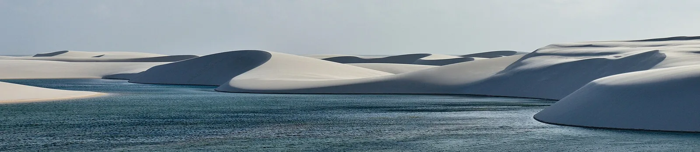
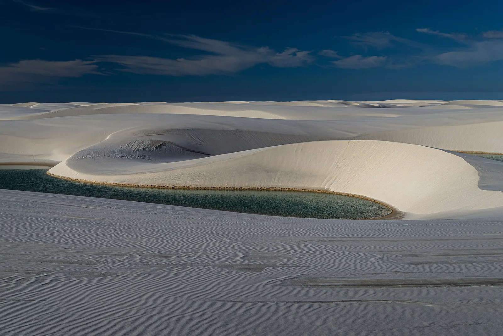
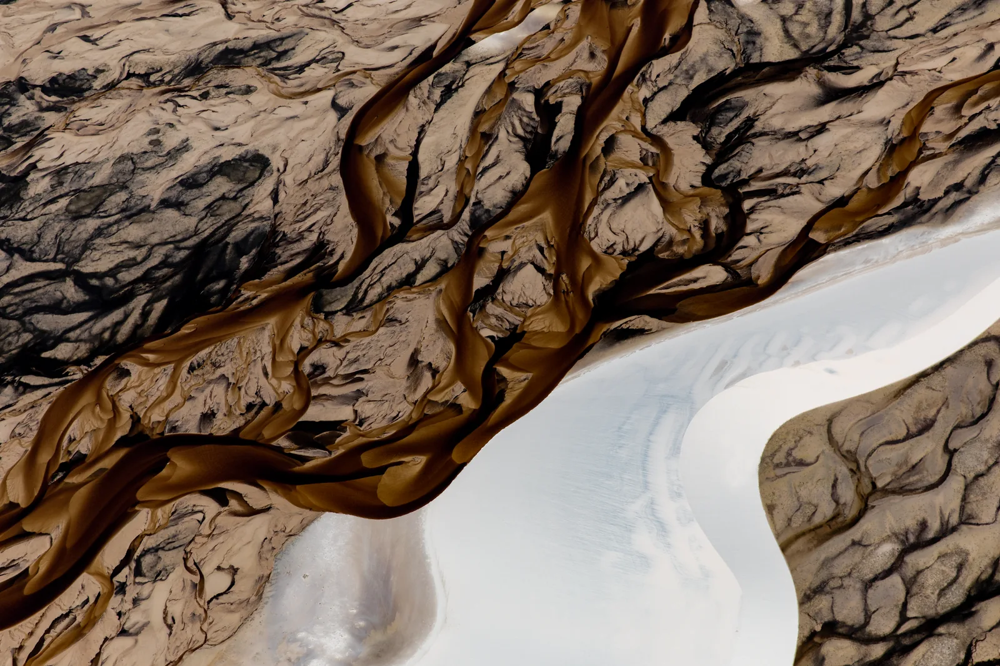
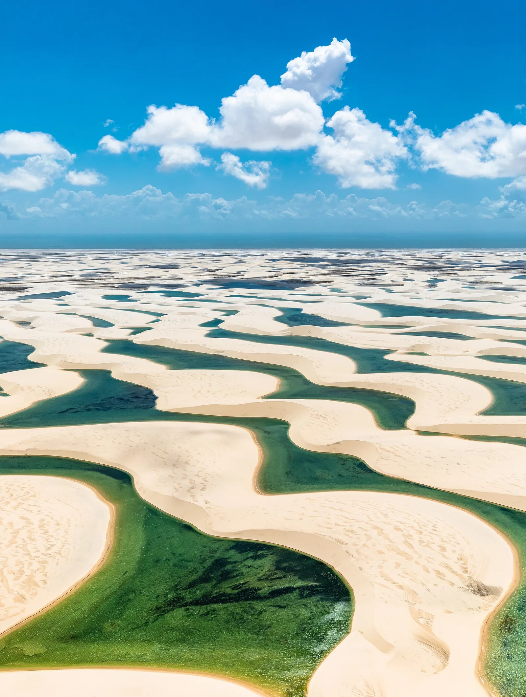

E4 · Este
E4 · Osten
E4 · East
Lençóis Maranhenses
Vi un desierto que en verano se llena de lagunas, como si la lluvia ahí no supiera que los desiertos no deberían tener sed.
Ich sah eine Wüste, die sich im Sommer mit Lagunen füllt, als wüsste der Regen dort nicht, dass Wüsten keinen Durst haben dürften.
I saw a desert that fills with lagoons in summer, as if the rain there did not know that deserts should not be thirsty.
Información
El Parque Nacional dos Lençóis Maranhenses protege 156.608 hectáreas sobre la costa de Maranhão. Unas 90.000 son un campo de dunas con lagunas temporarias y permanentes, a lo largo de 80 kilómetros de costa.
El viento sopla casi siempre en la misma dirección y forma dunas en media luna que llegan a encadenarse por 75 kilómetros y avanzan más de 20 tierra adentro. Entre ellas, la lluvia estacional junta agua dulce en lagunas que aparecen y desaparecen con el año.
El área está protegida por decreto desde 1981 y la administra el ICMBio. En julio de 2024 la UNESCO la declaró Patrimonio Mundial por su belleza excepcional y por ser un fenómeno natural único.
Information
El Parque Nacional dos Lençóis Maranhenses protege 156.608 hectáreas sobre la costa de Maranhão. Unas 90.000 son un campo de dunas con lagunas temporarias y permanentes, a lo largo de 80 kilómetros de costa.
El viento sopla casi siempre en la misma dirección y forma dunas en media luna que llegan a encadenarse por 75 kilómetros y avanzan más de 20 tierra adentro. Entre ellas, la lluvia estacional junta agua dulce en lagunas que aparecen y desaparecen con el año.
El área está protegida por decreto desde 1981 y la administra el ICMBio. En julio de 2024 la UNESCO la declaró Patrimonio Mundial por su belleza excepcional y por ser un fenómeno natural único.
Information
El Parque Nacional dos Lençóis Maranhenses protege 156.608 hectáreas sobre la costa de Maranhão. Unas 90.000 son un campo de dunas con lagunas temporarias y permanentes, a lo largo de 80 kilómetros de costa.
El viento sopla casi siempre en la misma dirección y forma dunas en media luna que llegan a encadenarse por 75 kilómetros y avanzan más de 20 tierra adentro. Entre ellas, la lluvia estacional junta agua dulce en lagunas que aparecen y desaparecen con el año.
El área está protegida por decreto desde 1981 y la administra el ICMBio. En julio de 2024 la UNESCO la declaró Patrimonio Mundial por su belleza excepcional y por ser un fenómeno natural único.
Galería
Galerie
Gallery




Fuentes
Quellen
Sources
- UNESCO, Centro del Patrimonio Mundial, Lençóis Maranhenses National Park — https://whc.unesco.org/en/list/1611/ consultado 2026-10-05abgerufen 2026-10-05accessed 2026-10-05
- ICMBio, Brasil, Parque Nacional dos Lençóis Maranhenses — https://www.gov.br/icmbio/pt-br/assuntos/biodiversidade/unidade-de-conservacao/unidades-de-biomas/marinho/lista-de-ucs/parna-dos-lencois-maranhenses consultado 2026-10-05abgerufen 2026-10-05accessed 2026-10-05